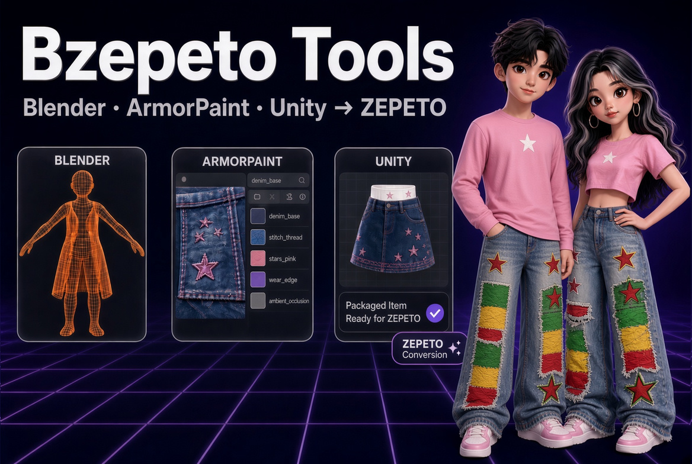

BZepeto — ZEPETO Item Creator Suite for Blender, Unity & ArmorPaint
🇺🇸 English | 🇰🇷 한국어
BZepeto is an independent tool made by Chamiseul (ChamIseul Creator). It is not made, endorsed or supported by NAVER Z (ZEPETO), the Blender Foundation, Unity Technologies or the ArmorPaint authors.

The whole route of a ZEPETO item in one place: build it in Blender, paint it in ArmorPaint, and hand it to ZEPETO Studio in Unity — without exporting, importing and wiring materials by hand at every step.
Blender ──①──> ArmorPaint ──②──> Blender
│ └────③────> Unity (ZEPETO Studio)
└──────────────④──────────────> Unity (ZEPETO Studio)
① the mesh goes to ArmorPaint live ② painted textures come back ③ textures go straight to Unity ④ the finished item goes to Unity, checked and packaged
Pick a tool in the menu on the left:
| Page | What is in it |
|---|---|
| Blender Add-on | install, loading the base character, checks and Send, Review Tools, face expressions |
| Unity Package | install, automatic import and ZEPETO shaders, review menu |
| ArmorPaint | install, live link, node samples for beginners, the material library, ZEPETO Mode, stitches |
| Help & FAQ | troubleshooting, frequent questions, rejection reasons, licence |
What you need
| OS | Windows 10 / 11, 64-bit |
| Blender | 4.5 or later (tested on 4.5 – 5.3) |
| Unity | ZEPETO Studio project, Unity 2020.3.9f1 |
| GPU | DirectX 12 capable (for ArmorPaint) |
| ZEPETO base character | creatorBaseSet_zepeto.fbx from ZEPETO's creator resources — it is ZEPETO's file, so it is not included |
Your download
Gumroad gives you one file, BZepeto_<version>.zip. Unzip only this file (right-click >
Extract All). The BZepeto_<version> folder it makes holds:
| File | What it is | Install |
|---|---|---|
bzepeto_blender-<version>.zip |
Blender add-on | Blender page |
com.bzepeto.unity2020-<version>.tgz |
Unity package for ZEPETO Studio (Unity 2020.3.9) | Unity page |
BZepeto_ArmorPaint_<version>_win64.zip |
ArmorPaint with the BZepeto plugins enabled and the node samples (Template) |
ArmorPaint page |
SHA256SUMS.txt |
checksums to verify the downloads | — |
Do not unzip the Blender add-on
Blender installs bzepeto_blender-<version>.zip as it is. Unzip only the outer
BZepeto_<version>.zip and the ArmorPaint zip.
This guide is the only manual — there are no README files in the download.
Updating? Gumroad emails you when a new version is posted; download the new
BZepeto_<version>.zip from your Gumroad Library and install all three files. The Blender
add-on and the Unity package replace the old ones; ArmorPaint goes into a new folder.
Where BZepeto keeps its files
Everything lives under %USERPROFILE%\BZepeto. Put the base character in
%USERPROFILE%\BZepeto\Samples\creatorBaseSet_zepeto.fbx (or set ZEPETO Files Folder in the add-on preferences to the folder that holds it).
Blender and Unity both use %USERPROFILE%\BZepeto\HotExport as the hand-over folder, so there is
nothing to set up between them. To move everything, set the environment variable BZEPETO_HOME
(e.g. D:\BZepeto) and restart Blender and Unity.
What's New
v1.3.1 — Studio render, Marvelous Designer link, long-skirt swing & accurate checks
Update the Blender add-on and the Unity package
ArmorPaint 1.3.0 keeps working (only its version label changes).
Studio render — the new Studio Render panel shoots the character in its items with a seamless backdrop, soft light and a portrait camera: background and light colour presets (rainbow too), full / upper body / head framing, builder sliders, EEVEE and Cycles, transparent PNG and the ZEPETO shaders' look (Blender guide).
Marvelous Designer link — The MD Live panel sends the ZEPETO character to Marvelous Designer and brings the garment back rigged for its category and worn. With Live on, every pose or body change swaps the avatar in Marvelous Designer and the refitted garment comes back by itself (Blender guide).
Auto skirt swing — Rigging > Swing Bones > Auto Skirt Swing puts swing chains on a skirt, dress or long coat in one go (4 from the front, hip joints to hem). The default hem swing of 0.4 keeps the legs inside the skirt in a stride
More accurate checks — things reported as errors or warnings that were not:
- a head item's (NoColor) material tag failed the naming check, and Fix Material Names removed it
- a refitted garment's internal shape key went out in the FBX as a blend shape (a real bug)
- _shd material names and DR/TOP mesh names are the guide's suggestion: shown as one, not a warning
- "too large" for heels and platform soles, "empty mask" for accessories, "hair colour" for hairbands/pins
- Export checks: "merge to one material" on a two-material dress, unused bones, absolute image paths
- Unity: the Sprites-Default warning on every converted prefab, "no hips" on unskinned items, the blend
shape error on hats without expressions, "texture matched no slot" when an item is sent again, and
"Can't import tangents" on every item (the FBX now carries tangents)
v1.3.2 — ArmorPaint filters, mesh-driven generators + diagnostics
The ArmorPaint effect stack, reworked against Substance Painter:
- Filters (6 adjustment layers): Blur · Sharpen · Invert · HSL Shift · Levels · Warm Tint — they edit everything painted below (the Substance filter-layer way)
- Mesh-driven generators: Edge Wear and Cavity Dirt read the mesh's curved areas directly in the shader — they appear on edges and in crevices only
- 6 new GPU nodes (19 total): Tartan Plaid · Gingham · Polka Dots · Grunge · Water Drops · Glow Bands
- 10 new smart materials (32 total): Denim Wash · Rose Gold · Patina Copper · Neoprene · Cork · Terrazzo · Chalk Paint · Crushed Velvet · Tulle Net · Gold Sequin
Convert Diagnostics improved — fixed diagnosing the old target instead of the FBX picked in the Project window, the diagnosed path is shown in full, a Check the original FBX button appears for converted prefabs, and item meshes count skinned meshes too (correct FBXs no longer report "no item mesh")
Live preview removed — the Unity edit-mode scene has no character of its own (the SDK builds it on Play), so the feature had nothing to move. Blender's Playground covers body shape and pose checks
v1.3.1
- 11 URP Shader Graph samples in the Unity package's
Samples~(Eye, Toon, Hologram, Water, Wind, Sparkle, Hair, Lava, ForceField, Iridescence, Neon) — import them from Package Manager > Samples
v1.3.0 — The ArmorPaint material library & high heels
Update all three tools together
Install the v1.3.0 Blender add-on, Unity package and ArmorPaint. Unzip ArmorPaint into a new folder and point ArmorPaint Executable at it.
The ArmorPaint material library (the BZepeto Library panel) — the star of this release:
- 22 smart materials — Wool·Canvas·Linen·Suede·Corduroy·Tweed·Velvet·Satin·Sequin·Camo, Gold·Chrome·Copper·Rusty Iron·Painted Metal·Brushed Aluminium·Carbon Fiber·Gem, Glitter·Wood·Marble·Plastic·Rubber. Colour, roughness, metal and relief land in one click, and being procedural they stay crisp at 512 px
- 6 generators — Dirt·Bleach Fade·Mud·Rust·Chipping·Sparkle Dust. One click makes a layer whose opacity is the pattern; paint its black mask to place it (the Substance smart-mask job)
- 9 quick setups — top·hoodie·jeans·skirt·coat·shoes·gem·hair·toon. The ZEPETO mode and a matching material, one button each
- Match materials by name — rebuilds the item's materials from the names they arrive with from
Blender (
gold_trim→gold,denim→denim,leather→leather ...). Hair, fur, eyes, mouth and lace are left alone
High heels — lift the heels with the Heel Angle and Sole (cm) sliders, model the shoe on
them, and the shoe's FBX carries ZEPETO's heel data (the expressions bones) so the preview wears it
the way you modelled it. Read Heel From Rig pulls the values of an imported ZEPETO heel item
Gloves, nails, rings — the finger weights no longer blend into the next finger when it bends; check with Glove Test > Fist
Mascot head expressions — a head bigger than the face gets expressions too: Mark Eyes / Brows / Mouth → Transfer to Mascot Head. A mascot eye 1.3x the face's blinks 1.3x as far
Skirts and dresses — no longer split open in the middle on a stride
Live preview removed — the Unity edit-mode scene has no character of its own (the SDK builds it on Play), so the feature had nothing to move. Checking body shape and poses stays with Blender's Playground (ZEPETO's preview menu and the clip tests)
Also — every panel folds into sections (▸/▾, the status stays on the folded row); check results list the problems first; panels stay fast after importing a GLB; Bind keeps a belt's and its buckle's thickness; the wrong T-pose coat warning is gone; symmetry fixes keep the 4-bones-per-vertex limit; Unity's hot folder survives bursts of files
v1.2.0 — Major update
Update all three tools together
Install the v1.2.0 Blender add-on, Unity package and ArmorPaint. Unzip ArmorPaint into a new folder and point ArmorPaint Executable at it.
All 10 ZEPETO shaders, end to end — pick the shader per item in Blender (Lit, Cloth, Fur, HairAlpha, Sparkle, Iridescence, Prism, CustomEnv, Toon, Detail Normal); ArmorPaint's ZEPETO Mode exports exactly the maps that shader reads; Unity sets shader, slots, keywords and factors by itself.
Fewer review rejections (ZEPETO's current guide, 2025–2026)
- Pose / body clip test: ZEPETO's 10 preview poses × 2 body types × 5 deformations, skin coming through the item marked in red (leg lifts through short skirts, holes in large body types)
- Face expressions: the 249 ZEPETO expression shape keys on the base character, transferred to headwear and masks so they follow the face; per-expression clip test; name and order checks
- Category triangle limits updated (socks 3,500, nail art 1,500); warnings for a mask reaching the neck/hands/feet, items far outside the preview, flat hair cards, a showing scalp, swing bones on bangs
- Over 1 MB of textures: which map to shrink to what size, and a Shrink Textures to 1 MB button
- Hair on a non-hair item (no hair colour) and hair cards invisible from behind are flagged
- Unity: "(NoColor)" added to headwear/mask materials; Light components, particle limits and particles without material or texture (white squares), non-ZEPETO shaders, Color Grading and fur length checked; thumbnail draft with particles; Import BlendShapes switched on
- Review Tools: head size test, baby hairs drawn in front, FX joint, female/custom torso fitting, content checklist
ArmorPaint — 13 BZepeto nodes with a finished sample material for each (Template folder), ZEPETO viewport preview, animated painting with a pose clip, emission in its own colour, rebuilt from current ArmorPaint sources
CustomEnv (gems, high gloss) — an HDRI set on the item lights ArmorPaint's viewport and becomes the Unity reflection cubemap
Set outfits (UDIM) — a top and a bottom material each get their own maps: painted as UDIM tiles in ArmorPaint, wired per material in Blender and Unity (how)
One download — all three tools in one file, BZepeto_1.2.0.zip, with checksums; the ArmorPaint
folder no longer includes ArmorPaint's downloaded brush and mask cache, so it is smaller
Hair quality — strand direction check, Sort Hair Layers, alpha check, clean strand ends
Fixes — textures painted in Blender without saving arrived blank; Unity live body shape / pose preview; normal maps, metallic/smoothness, emission and sheen colours, colour space, cut-out transparency in Unity
v1.0.0 — First release
- Blender add-on: ZEPETO checks and Send, swing bone wizard, body shape, wearables, playground
- ArmorPaint live link: paint while you model, smart ZEPETO materials, automatic stitches
- Unity package for ZEPETO Studio (Unity 2020.3.9): hot folder import and automatic ZEPETO shaders
© 2026 Chamiseul